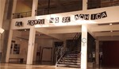

- 
- “Para todes, tode – Plan de Lucha” es una muestra para despertar todos los sentidos, una puesta audiovisual que apunta a interpelarnos en distintos niveles desde lo sensorial. A través de juegos de texturas, audios y videos nos invita a relacionarnos íntimamente con las obras. Llama la atención el artivismo visible en las telas y los bordados, que no sólo nos remontan a labores ancestrales designadas siempre a lo femenino, sino que, también, representan el recorrido de un proyecto que motiva al diálogo proponiendo tejer redes y vínculos para exponer vivencias que refuercen el lema “lo personal es político”. Hacer visible lo invisible es una obra de bordados que conversa con sus interlocutores, creada en colectivo por Analia Gauguín y Dora Morgen. Su título podría ser el hilo conductor de toda la muestra, que hace foco en exponer las crudezas más fuertes del patriarcado, y que muestra cómo sectores históricamente marginados, sesgados e invisibilizados aportan alegría y color a toda la sociedad. Nos echa en cara la urgencia de acordarnos de todes y de resignificarnos al nombrarnos. La puesta, conformada por obras realizadas por más de 100 mujeres, lesbianas, trans y travestis, reafirma que podemos habitar cualquier espacio que deseemos. “Para todes, tode es una exposición de artes ampliadas que pone en diálogo y en paridad crítica y amorosa prácticas artísticas y culturales de todo el país y el Río de La Plata” nos explica su curadora, Kekena Corvalán. Ella le reprocha al mundo del arte – y con razón – la doble segregación que deja en la invisibilidad total a numeroses artistas que sostienen su práctica desde tiempos inmemoriales sin ser tenides en cuenta nunca. Esta puesta intenta (con éxito) romper los cánones sobre corporalidades y deseos en un ambiente mayoritariamente ocupado por varones cis. Censurada y desaparecida No es casual que una muestra de este estilo se desarrolle en un espacio como el Centro Cultural Haroldo Conti, situado en el corazón de la ex ESMA. Todo lo que allí habita existe con el fin de resignificar, poner en evidencia y arraigar en la memoria colectiva injusticias, desigualdades y sucesos que algunos sectores patriarcales y heteronormalistas intentan cobijar en las sombras. Fotografía por Belén Durruty - Estos sectores lograron cumplir su cometido al censurar una pieza muy particular de esta muestra, La virgen abortera. Por disposición del juez federal Esteban Furnari, la obra de la artista Coolpa se encuentra apartada del recorrido que propone la puesta. Para acceder a ella tuvimos que solicitárselo a una empleada del museo, que buscó las llaves de un cuartito multiuso en el que la obra convivía con computadoras, paquetes de yerba y la mirada juiciosa de esta señora. La Virgen, según sus creadorxs, “es un desplazamiento simbólico de la noción de ícono religioso a la de icono popular”. Por lo tanto, son les que censuran quienes mitifican esta figura, que podría haber sido simplemente una parte más de la exposición. Aparentemente, esconderla y encerrarla no fue suficiente, ya que al momento de la redacción de esta nota nos enteramos de que la obra ha desaparecido. Inclusive luego de que se cumplió con todo lo establecido por el fallo de Furnari, y estando la obra bajo llave, el sábado 5 de mayo se recibieron denuncias de visitantes que quisieron acceder a la pieza y no obtuvieron respuestas acerca de dónde estaba. Desde la Mantis, repudiamos cualquier tipo de censura, y al mismo tiempo denunciamos que son estas decisiones las que dan fundamento a las políticas de desfinanciamiento de los espacios culturales. La muestra colectiva “Para todes, tode – Plan de lucha” se mantendrá estable hasta el 19 de mayo de 2019 inclusive, con entrada gratuita y abierta a todo público, entre tantas otras obras que ofrece este espacio, hoy desfinanciado por el gobierno de Mauricio Macri. Les recomendamos fuertemente acercarse a recorrerlo.